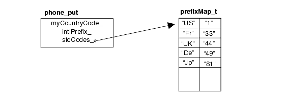
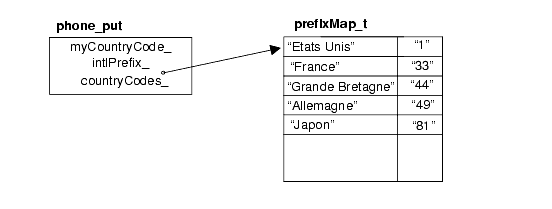

Let us now try to implement the phone number facet class. What does this facet need to know?
A facet needs to know its own locality, because a phone number is formatted differently for domestic and international use; for example, a German number looks like (089) / 636-48018 when used in Germany, but it looks like +1-49-89-636-48018 when used internationally.
A facet needs information about the prefix for dialing international numbers; for example, 011 for dialing foreign numbers from the US, or 00 from Germany, or 19 from France.
A facet needs access to a table of all country codes, so that one can enter a mnemonic for the country instead of looking up the respective country code. For example, I would like to say: "This is a phone number somewhere in Japan" without having to know what the country code for Japan is.
The following class declaration for the telephone number formatting facet class is enhanced with a virtual member function do_put() which is delegated the task of actually constructing a phone number in a locale-dependent fashion in derived classes, as well as data members for the facet object's own locality, and its prefix for international calls (see //4 and //5 in the code below). Adding a table of country codes is omitted for the time being.
class phone_put: public std::locale::facet {
public:
static std::locale::id id;
typedef std::string string_type;
phone_put (std::size_t refs = 0)
: std::locale::facet (refs) { }
string_type put (const string_type &cntryName,
const string_type &areaCode,
const string_type &extension) const {
return do_put (cntryName, areaCode, extension); // 1
}
protected:
phone_put (const string_type cntryName,
const string_type intlPrefix,
std::size_t refs = 0) // 2
: std::locale::facet(refs),
_cntryName(cntryName), _intlPrefix(intlPrefix);
virtual string_type
do_put(const string_type &cntryName, // 3
const string_type &areaCode,
const string_type &extension) const { ... }
const string_type _cntryName; // 4
const string_type _intlPrefix; // 5
};
Note how this class serves as a base class for the facet classes that really implement a locale-dependent phone number formatting. Hence, the public constructor does not need to be extended, and a protected constructor is added instead (see //2 above). The virtual member function do_put() is added (see //3 above) so that it may be overridden in derived classes without hiding any overloads of the put() function if they existed, and also so that code can be placed in put() that will always be executed even though do_put() will be overridden (this is the same strategy used in the design of the standard facets). In this base class, do_put() could be implemented to construct phone numbers in a generic international fashion, e.g., "+49-89-636-48018".
Let us now deal with the problem of adding the international country codes that were omitted from the previous class declaration. These country codes can be held as a map of strings that associates the country code with a mnemonic for the country's name, as shown in Table 14:

In the following code, we add the table of country codes:
class phone_put: public std::locale::facet {
public:
...
class CodeMap
: public std::map<std::string, std::string> { // 1
public:
CodeMap() {
insert (std::make_pair ("De", "49"));
insert (std::make_pair ("Fr", "33"));
insert (std::make_pair ("US", "1"));
...
}
};
static const CodeMap* getStdCodes () { // 2
return &_stdCodes;
}
protected:
...
static CodeMap _stdCodes; // 3
};
Since the table of country codes is a constant table that is valid for all telephone number facet objects, it is added as a static data member _stdCodes (see //3). The initialization of this data member is encapsulated in a class, CodeMap (see //1). For convenience, a function getStdCodes() is added to give access to the table (see //2).
Despite its appealing simplicity, however, having just one static country code table might prove too inflexible. Consider that mnemonics might vary from one locale to another due to different languages. Maybe mnemonics are not called for, and you really need more extended names associated with the actual country code.
In order to provide more flexibility, we can build in the ability to work with an arbitrary table. A pointer to the respective country code table can be provided when a facet object is constructed. The static table, shown in Figure 15 below, serves as a default:

Since we hold the table as a pointer, we need to pay attention to memory management for the table pointed to. We use a flag for determining whether the provided table needs to be deleted when the facet is destroyed. The following code demonstrates use of the table and its associated flag:
class phone_put: public std::locale::facet {
public:
phone_put (size_t refs = 0)
: std::locale::facet (refs), _codeMap (&_stdCodes),
_delete_it (false) {}
protected:
phone_put (const string_type &cntryName, // 1
const string_type &intlPrefix,
const CodeMap* codeMap = 0,
bool delete_it = false,
size_t refs = 0)
: std::locale::facet (refs), _cntryName (cntryName),
_intlPrefix (intlPrefix), _codeMap (codeMap),
_delete_it (delete_it)
{
if (!codeMap) // 2
_codeMap = &_stdCodes;
}
const CodeMap* getCodes () { // 3
return _codeMap;
}
public:
virtual ~phone_put () {
if (_delete_it)
delete _codeMap; // 4
}
...
protected:
bool _delete_it;
const CodeMap* _codeMap;
static CodeMap _stdCodes; // 5
...
};
| //1 | The constructor is enhanced to take a pointer to the country code table, together with the flag for memory management of the provided table. |
| //2 | If no table is provided, the static table is installed as a default. |
| //3 | For convenience, a function that returns a pointer to the current table is added. |
| //4 | The table is deleted if the memory management flags says so. |
| //5 | Protected data members are added to hold the pointer to the current country code table, as well as the associated memory management flag. |